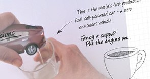
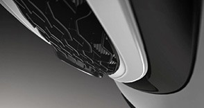
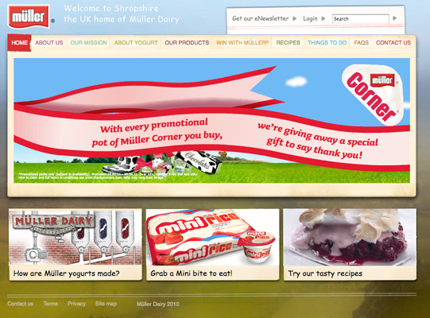
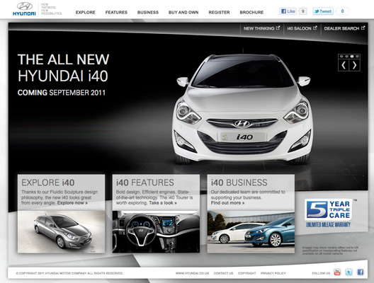
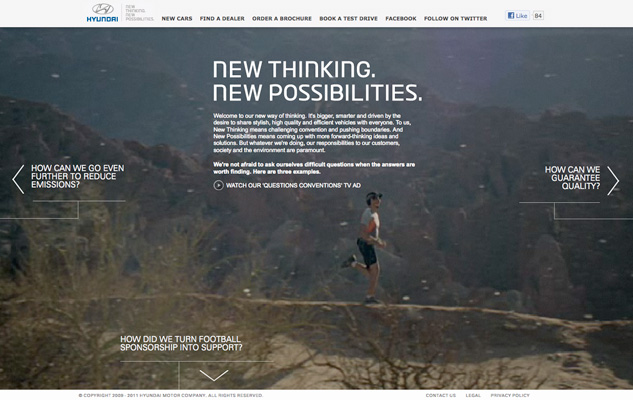

Juarez
Enthusiastic and motivated with over 20 years experience within the internet/web environment.
Offering technical insight, planning and development backed up with strong analytical skills and attention to detail.
Vast experience on both sides of the client/agency relationship. Working on in house projects for Direct Line and TUI; and well known brands/clients such as the BBC, Honda, Barclays and Sony for various agencies.
Technical Leadership
Creative Technology
Web Development
Accenture - Grabber
Build information:
Accenture - Grabber
Dual screen experience using NodeJS to connect a mobile device to an arduino board controlling a prize grabbing claw
Users would use their phone to direct the grabber claw and win a prize.
View videoSony - The Last of Us
Build information:
Sony - The Last of Us
HTML5, CSS3 and JS build.
Animations work across mobile, tablet and desktop.
Facebook API utilised to personalise the experience. Profile pictures are obtained from the users friends and placed into canvas elements.
Uses RequestAnimationFrame to help performance by keeping in sync with the refresh rate and css3 animations with hardware acceleration to stop janking.
View videoEnglish Heritage
Build information:
Penguin - My Independent Bookshop
Build information:
Penguin - My Independent Bookshop
Technically lead and nurtured client through the process
HTML5, CSS3 and JS responsive build
PHP codeigniter framework as the backend, front end is a custom responsive grid, uses the JQuery framework for JS work, Modernizr for feature detection and a selection of polyfills to cover HTML5 functionality in older browsers such as Drag and Drop and SVG support.
Most of the animations are done in CSS3.
View site View case studySony - Infamous Second Son
Build information:
Sony - Infamous Second Son
Dual screen experience using NodeJS to connect a mobile device to your browser using websockets
Users would pick a power and swipe in a direction to destroy models in a video scene. Latency and performance were important and I was able to make the experience near instantaneous.
View video View case studyHonda - Honda Hands
Build information:
Honda - Honda Hands
HTML5, CSS3 and JS responsive build.
On desktop and tablet the video will play through and utlising the YouTube API will prompt users to interact with the video at various timing points. Due to need to support IE8, animation pieces were created in flash, for tablet and above IE8 the animations were converted to HTML5 using swiffy which proved extremely useful and flexible.
Uses RequestAnimationFrame for performance.
View siteEA - FIFA Goals of the Week
Build information:
EA - FIFA Goals of the Week
Facebook Canvas app that allows users to submit a URL from youtube or the EA goals site to enter a goals of the week competition.
Goals from the EA site had to be collected by a cross domain script that run upon goal submission.
Users were able to vote for their favourite goals which were passed to an admin area where you could pick out goals to be voted on per week and upload a highlights reel.
View siteHonda - CRV-SE
Build information:
Honda - CRV-SE
Simple page for CRV-SE, youtube video at the top that scales, car colour changer written in JS and a pie chart that works from stats that are picked up from youtube views to decide which car is most popular, black or white.
Pie chart is drawn as a canvas element.
View siteBBC - College of Production
Build information:
BBC - College of Production
College of Production is built on the BBC Forge platform.
The site sits on a Zend platform and pulls data from the BBC Java CMS iSite
The COP site hooks into various BBC libraries such as iPlayer and programme information.
View siteHonda - Do More New
Build information:
Honda - Do More New
Honda piece for CR-V, interacts with Google Maps API to show locations around you for you to explore on a random trip to one of 12 locations.
Google Maps supplies the distance from your location and then your fuel saving is worked out.
Weather comes from a weather api feed and your individual information could be saved into a PDF to print (PDF and weather feed appear down).
View siteLOCOG - Olympics 2012
Build information:
LOCOG - Olympics 2012
Competitive Tweeting. #SupportYourTeam was a country vs. country race for Olympic Twitter supremacy. People were encouraged - whether at the Games or watching on TV on the other side of the world - to use the #SupportYourTeam hashtag to tweet support for their nations and athletes. These tweets were then aggregated and displayed around the London 2012 site as animated infographic races.
Database and Infrastructure was built to deal with an immense amount of traffic in which we processed over 15m tweets.
View case studyGo On UK - Main site
Build information:
Go On UK - Main site
Responsive template build on top of a Wordpress install.
Uses Custom fields plugin to allow admin users to customise more of the site.
View SiteMuller - Muller Dairy
Build information:
Muller - Muller Dairy
Drupal based website which I built as part of a team and then solely maintained due to departures.
View siteHyundai - i40
Build information:
Hyundai - i40
Build and deployment of this XHTML/CSS site for the Hyundai i40, using JQuery for interactive elements that degrade gracefully.
Tax calculator built using JQuery and XML as a data storage to compile tax benefits for business purchase of the latest Hyundai car model.
360 car model is also Javascript based rather than a typical Flash 360 model.
Hyundai - Hyundai Thinking
Build information:
Hyundai - Hyundai Thinking
Build and deployment of this XHTML/CSS site for the Hyundai Thinking campaign.
Navigation of site is done with JQuery where the X and Y coordinates of each screen are looked up and then animated to.